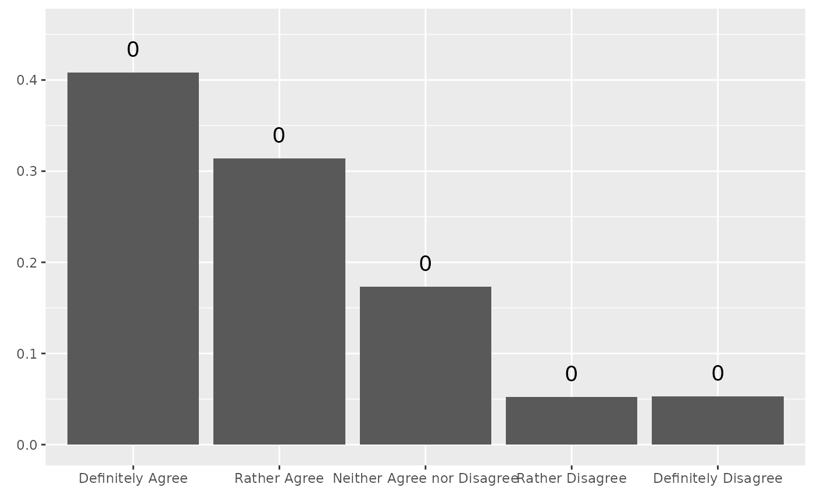
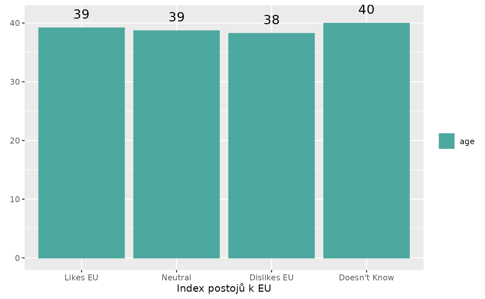
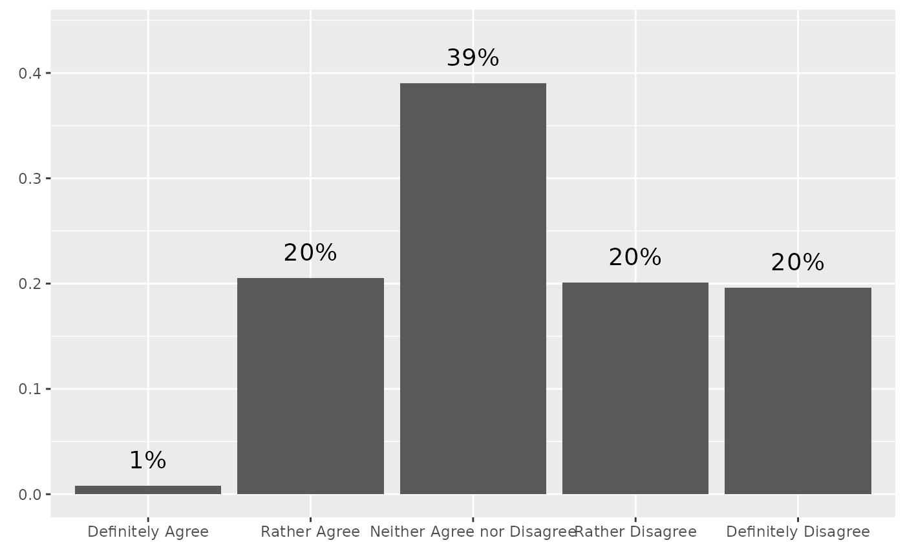
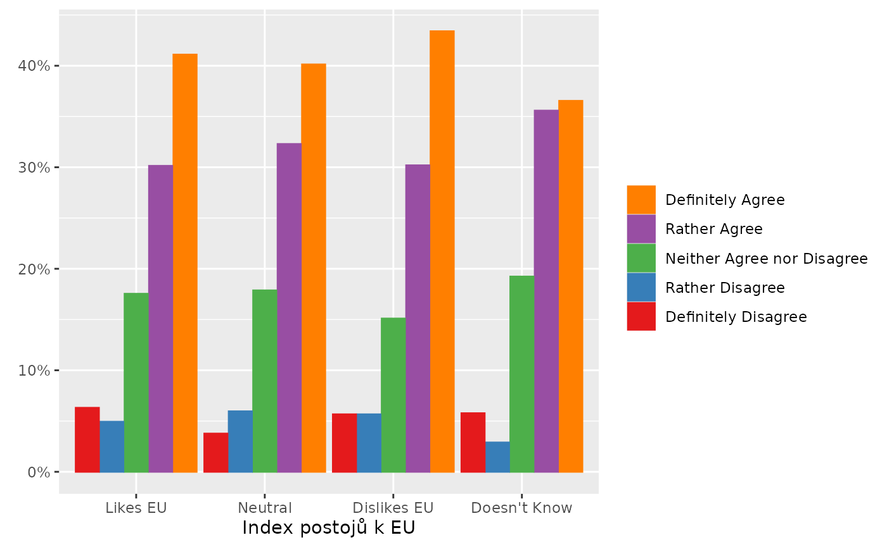
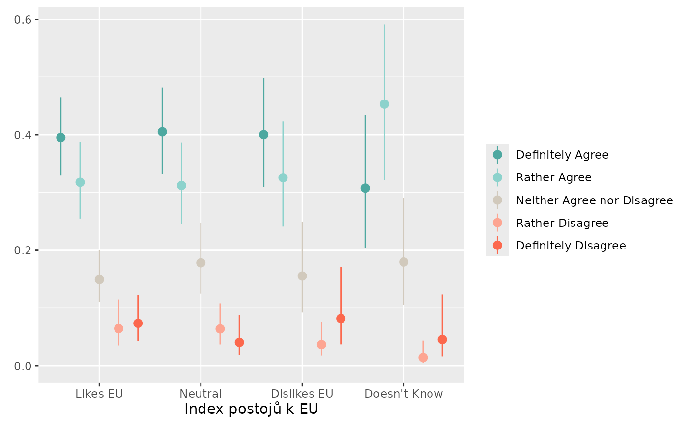

This vignette shows how to use stemtools for creating
a variety of standardized plots. We’ll use a simuated dataset
trust, included with the package itself.
library(stemtools)
data(trust, package = "stemtools")
head(trust)
#> police government
#> 1 Neither Agree nor Disagree Rather Disagree
#> 2 Definitely Agree Definitely Disagree
#> 3 Definitely Agree Definitely Disagree
#> 4 Neither Agree nor Disagree Rather Disagree
#> 5 Neither Agree nor Disagree Neither Agree nor Disagree
#> 6 Definitely Agree Neither Agree nor Disagree
#> eu army scientists
#> 1 Neither Agree nor Disagree Definitely Agree Neither Agree nor Disagree
#> 2 Neither Agree nor Disagree Rather Agree Rather Disagree
#> 3 Rather Agree Definitely Agree Rather Disagree
#> 4 Rather Disagree Definitely Agree Neither Agree nor Disagree
#> 5 Neither Agree nor Disagree Definitely Agree Rather Agree
#> 6 Neither Agree nor Disagree Definitely Disagree Neither Agree nor Disagree
#> eu_index nat_index age W biggest_concern1 biggest_concern2
#> 1 Likes EU Neutral 41 0.6452540 Unemployment Unemployment
#> 2 Neutral Satisfied 38 0.1800867 Immigration Corruption
#> 3 Likes EU Disatisfied 39 0.2939668 Immigration Healthcare
#> 4 Neutral Neutral 34 0.8033685 Immigration Healthcare
#> 5 Likes EU Satisfied 41 0.3471653 Healthcare Unemployment
#> 6 Dislikes EU Disatisfied 35 1.2082489 Immigration Healthcare
#> biggest_concern3
#> 1 Immigration
#> 2 Immigration
#> 3 Corruption
#> 4 Corruption
#> 5 Immigration
#> 6 CorruptionThe core function is stem_plot(), a convinient wrapper
around stem_summarise(), followed by a flexible
ggplot2 template. The aim of the stem_plot()
is to visualize aggregated data, namely counts and means.
stem_plot(data = trust, item = police)
#> No weights used.
stem_plot() automatically recognizes whether the item
variable is numerical or categorical. For numerical variables, grouping
variable should also be included using group argument.
Survey weights can be used by calling the weight
argument.
stem_plot(data = trust, item = age, group = eu_index, weight = W)
Customizing labels
By default, stem_plot() shows labels for each geom (set
labels = FALSE to hide them). Looks of the labels can be
customized using several arguments. label_scale multiples
labels by specified amount (e.g. 100).
label_accuracy rounds labels - 1 for no
decimal places, 0.1 for one decimal place,
0.01 for two, and so on. label_suffix and
label_prefix allow to add suffix and prefix respectively.
label_big controls thousands separator and
label_decimal control which character is used to separate
decimal digits. You can also hide labels lower than a certain threshold
with label_hide (with 0.05 being the default).
Additionally, you can pass a list into label_args to
specify additional arguments like vjust or
position:
stem_plot(data = trust,
item = government,
label_scale = 100,
label_suffix = "%",
label_hide = 0)
#> No weights used.
Customizing title, caption and axes
By default, plots include title. If the item has an attribute
label (such as one created using the
labelled package) and title_label = TRUE,
the label will be used instead of variable name. You can use
title_wrap to set how many characters before the title is
wrapped on the next line. If you don’t want to use title, set
title = FALSE. If you want to use your own title, use
stem_plot(..., title = FALSE) + ggplot::labs(title = "My title").
By default, the plot also includes a caption with sample size. To get
rid off the caption, set caption = FALSE.
stem_plot(data = trust,
item = government,
title_label = TRUE,
caption = TRUE)
#> No weights used.You can pass ggplot2’s scale functions into arguments
scale_x, scale_y, scale_fill and
scale_color. Note that you may need to set limits by hand
when using grouping variable and setting your own scale. Similarly, you
can control legend using guides.
Lastly, you can reverse the order of item and group variable using
item_reverse and group_reverse.
stem_plot(data = trust,
item = police,
group = eu_index,
label = FALSE,
scale_y = ggplot2::scale_y_continuous(labels = scales::percent_format(),
limits = c(0, NA)),
scale_fill = ggplot2::scale_fill_brewer(palette = "Set1"),
scale_color = ggplot2::scale_color_brewer(palette = "Set1"),
guides = ggplot2::guides(fill = ggplot2::guide_legend(reverse = TRUE),
color = ggplot2::guide_legend(reverse = TRUE)),
item_reverse = TRUE)
#> No weights used.
Collapsing categories
You can use collapse_item and
collapse_group to collapse variable categories by passing a
named list. The same arguments can also be used to rename
categories.
stem_plot(data = trust,
item = police,
group = eu_index,
label = FALSE,
collapse_item = list(`Ano` = c("Definitely Agree",
"Rather Agree"),
`Ani ano, ani ne` = "Neither Agree nor Disagree",
`Ne` = c("Rather Disagree",
"Definitely Disagree")),
collapse_group = list(`Pozitivní vztah` = "Likes EU",
`Neutrální vztah` = "Neutral",
`Negativní vztah` = "Dislikes EU",
`Neví` = "Doesn't Know"))
#> No weights used.Weights
If weights variable is specified, weights are treated as survey
weights passed into {svryr} (which in turn passes it into
survey).
stem_plot(data = trust,
item = government,
label_scale = 100,
weight = W)Choosing geoms
You can choose other geoms to represent the data. For all estimates,
95% confidence intervals are also computed and can be plotted using an
appropriate geom. You can also set additional arguments for your geom by
passing a named list into geom_args.
Note that with unweighted data, the confidence intervals are computed using the basic formula. With very small proportions and small sample sizes, this can lead to the confidence intervals’ bounds being outside of realistic values (i.e. proportions lower than 0 or higher than 1). If the data are weighted, the confidence intervals are based on logistic regression and will always be properly bounded.
stem_plot(data = trust,
item = police,
group = eu_index,
weight = W,
label = FALSE,
geom = ggplot2::geom_pointrange)